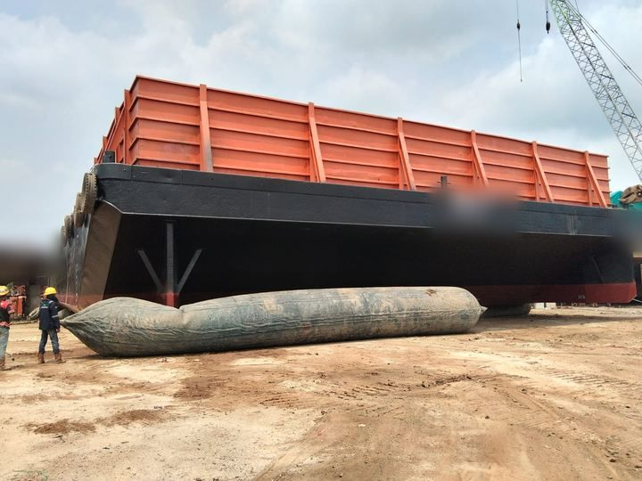

Pembangunan Kapal Baru
Kami membangun kapal sesuai spesifikasi pemesan, dari perencanaan dan fabrikasi lambung hingga kapal siap diluncurkan. Setiap tahap diawasi untuk memastikan kekuatan struktur, performa, dan efisiensi bahan bakar kapal.